T-Day
My Jellycat Collection
My mom has been gifting me one Jellycat every year for my birthday since I was a kid. Thankfully, these things just got super popular! So, I love showing them off. Here are all of my Jellycats and their names.
Now, whenever I visit a new city, I try to find some new Jellycats for myself. I usually aim for Amuseables from the food series. My favorites are the cinnamon roll and the croissant, which you will see below.
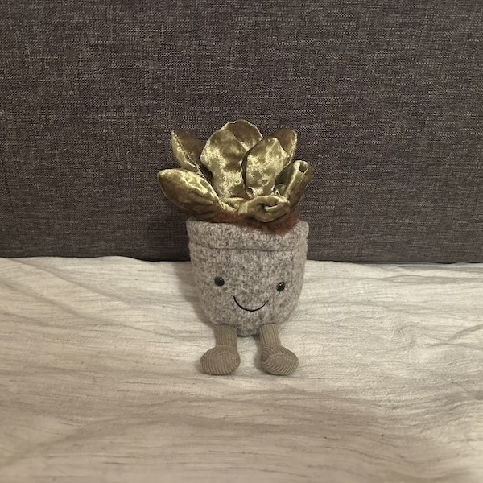
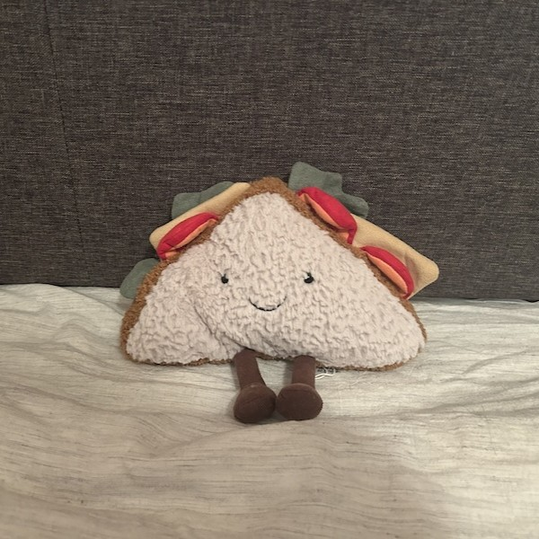
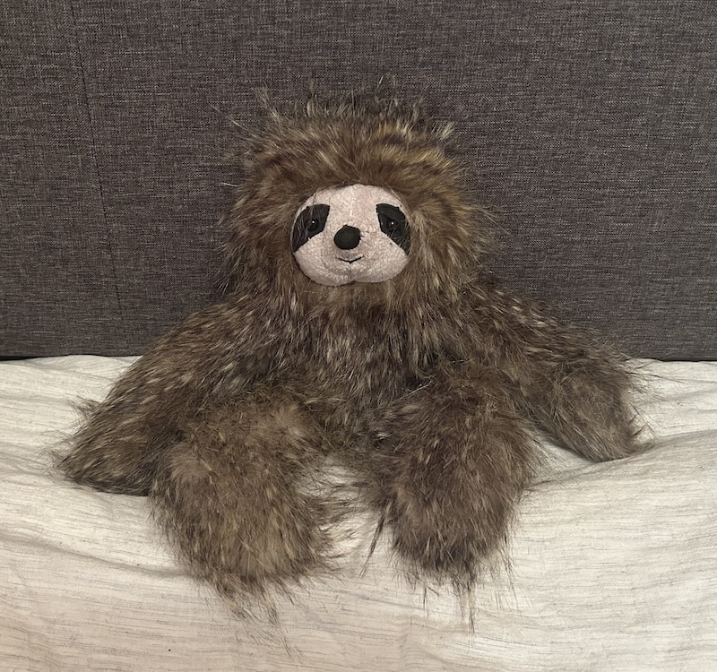
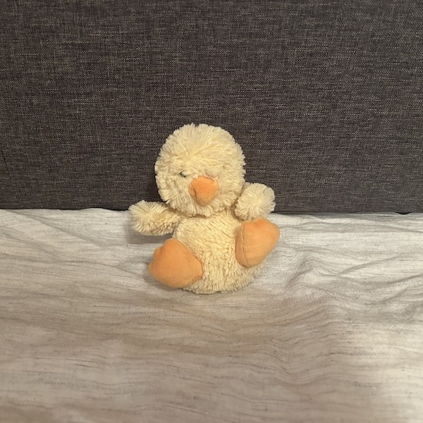
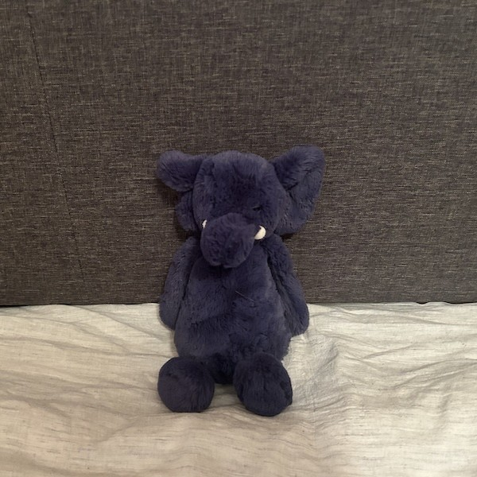
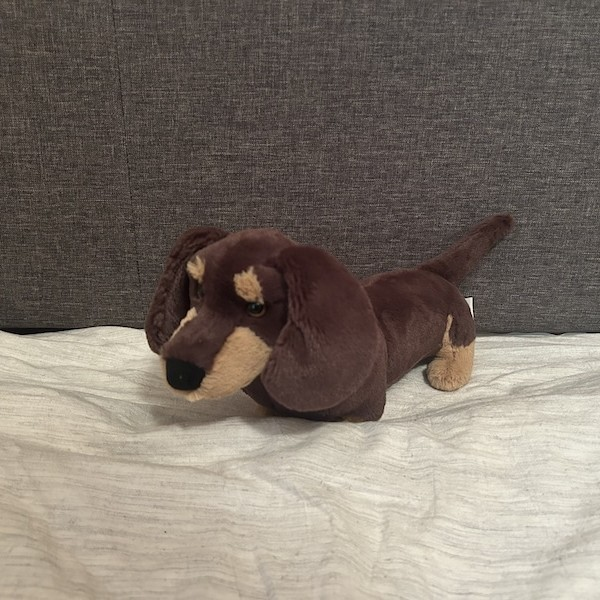
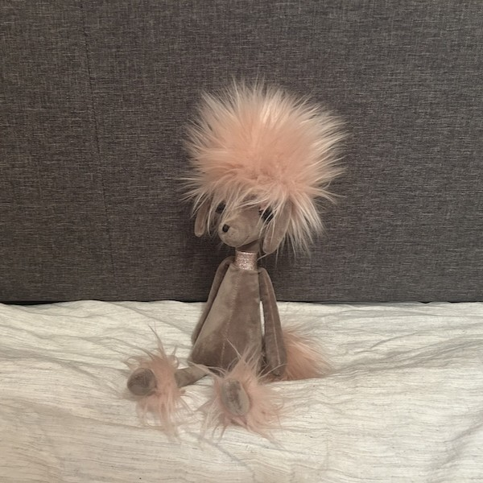
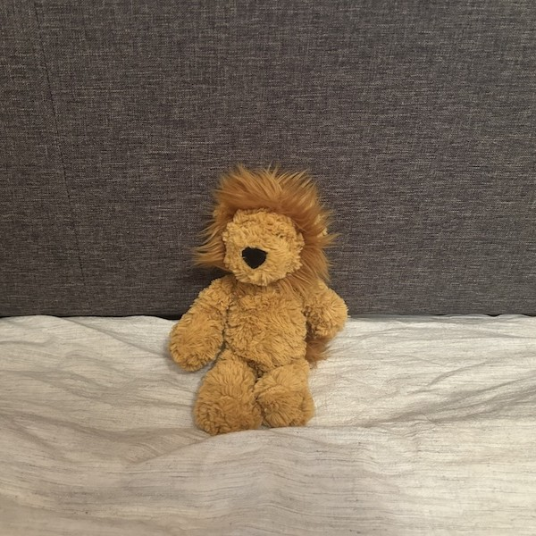
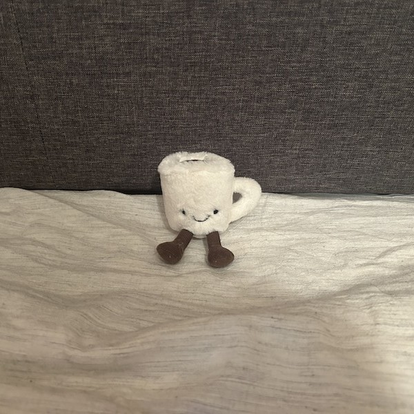
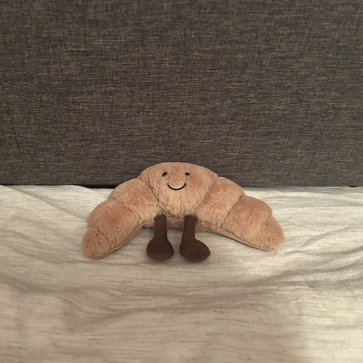
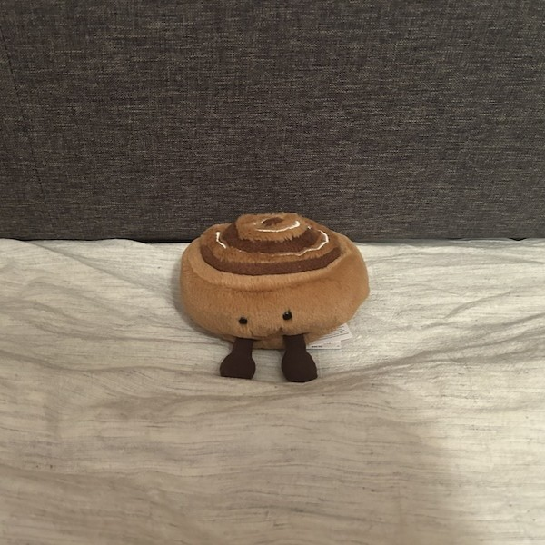
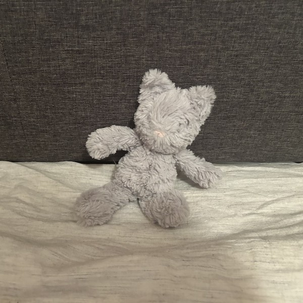
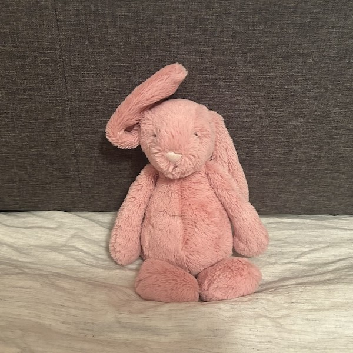
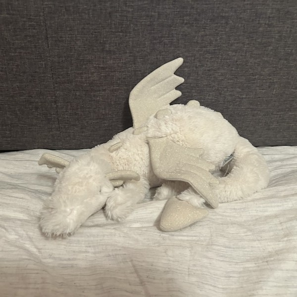
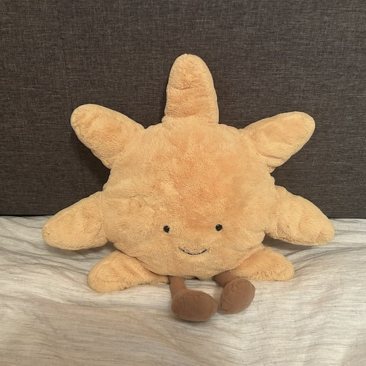